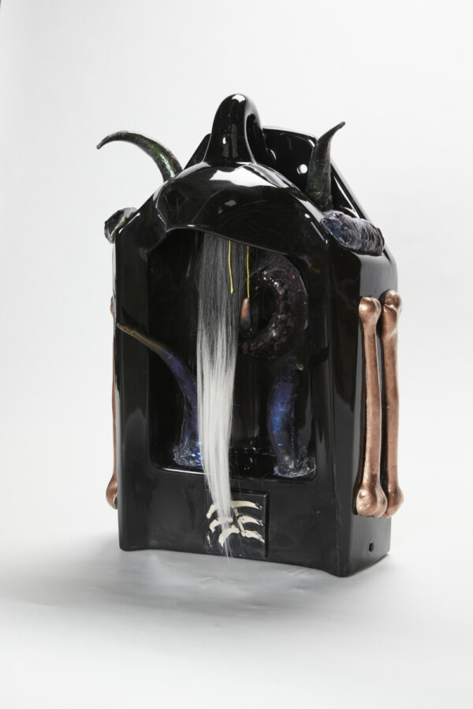

Dutes Miller: For a Darkend Room
For a Darkend Room installation by Dutes Miller
March 1 – May 31, 2026
Opening reception: Thursday, March 5, 5-8pm
For a darkend room is a small immersive installation exploiting the particular architecture of the gallery. The space is part cave, part temple, and part bathroom stall, all of which can be small spaces of an intimate but public nature. Elements of the installation include a cast ceramic sculpture, painted spray foam objects, a tinted plaster room divider, dark mylar curtains, small lighting elements, a small corner seat, and a soundscape.
Topics of investigation:
How do forms relieve themselves in low-light situations?
How does light work on reflective surfaces in the dark?
How do the ideas of intimacy and voyeurism relate to each other?